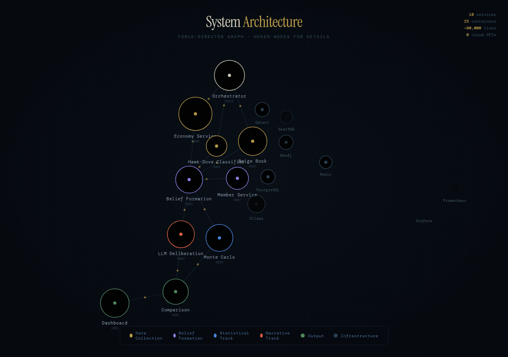

What If You Could Simulate the Fed On Demand?
Dual-Track Prediction with Multi-Agent AI and Bayesian Inference — 80,000 lines of code, 10 microservices, 25 containers, all running locally on a single machine.
make simulate command — interactive pipeline visualizationOceans of research exist on what happens after the Federal Reserve adjusts rates — how markets react, how credit flows shift, how currencies reprice. Far less attention goes to the process that produces those decisions in the first place. The deliberation itself — how twelve voting members weigh conflicting signals, form coalitions, and negotiate basis points behind closed doors — remains largely opaque. The Fed publishes full transcripts, but only five years after the fact. By the time you can read the room, the room has changed.
Recent advances in large language models have opened an unexpected door here. If LLM-based agents can convincingly simulate human reasoning in constrained institutional settings — and a growing body of work suggests they can — then it becomes possible to do something that was previously out of reach: reconstruct the deliberative machinery of a central bank committee meeting, not just forecast its output.
That is what this project attempts. I built a multi-agent platform where 19 AI personas — each modeled after a real FOMC member with distinct policy leanings, regional perspectives, and rhetorical tendencies — debate monetary policy using only the economic data that was actually available on meeting day. On January 28, 2026, when the Federal Reserve held rates steady at 3.50–3.75%, my system predicted 3.75% — both tracks, Monte Carlo and LLM deliberation, converging independently on the same number.
The system spans ~80,000 lines of Python and TypeScript across 10 microservices, 25 Docker containers, three databases, and a 16-page React dashboard. Everything runs locally on a single machine with a GPU — no cloud APIs, no OpenAI keys, no recurring costs beyond electricity.
But the point estimate is not really the point. The value is in the reasoning traces: watching a simulated hawk soften after processing labor market data, or seeing two prediction methodologies diverge and asking why. This is a tool for understanding the decision-making process, not just betting on its outcome.
What the System Does
The FOMC Simulation Platform runs a complete mock Federal Reserve meeting. It:
- Gathers point-in-time economic data from FRED, BLS, financial APIs, and real-time news via SearXNG — constrained to only what was actually known on the meeting date (no look-ahead bias)
- Generates a synthetic Beige Book analyzing regional economic conditions across all 12 Federal Reserve districts, with sector-level analysis and cross-district theme extraction
- Classifies member speeches as hawkish or dovish using a hybrid dictionary + ML pipeline
- Anchors each member's policy stance relative to the current federal funds rate using stance offsets — portable across any rate environment without recalibration
- Forms beliefs for each of 19 FOMC members using LLM personas anchored to their real-world policy philosophies
- Runs two parallel prediction tracks:
- Monte Carlo simulation (10,000 iterations) using Bayesian conjugate priors and a voting model
- LLM deliberation where agents participate in a structured 5-round debate with signal extraction
- Compares the tracks using probabilistic scoring metrics (Brier score, CRPS, calibration analysis)
- Produces a combined prediction with confidence intervals
The entire pipeline is orchestrated across 10 microservices, backed by PostgreSQL, Qdrant (vector search), and Neo4j (knowledge graph), with full observability via Prometheus, Grafana, and Loki.
Because every data source is constrained to point-in-time availability, the system can be run for any date — past, present, or upcoming. This makes it useful not only for backtesting against historical decisions, but also for generating forward-looking predictions that can be compared against market-implied expectations from tools like Bloomberg WIRP or CME FedWatch.
The Architecture

10 Python/TypeScript services running FastAPI + Uvicorn (backend) and React 19 (frontend), communicating via REST. Everything is async — httpx.AsyncClient for inter-service calls, asyncio.Semaphore for bounded concurrency to the LLM backend.
All LLM inference runs locally via Ollama — swappable with a single environment variable. A lightweight model like qwen2.5:3b keeps iteration fast during development; a high-context model like gemma3:27b or qwen3:14b improves deliberation quality when accuracy matters most. No OpenAI API, no cloud dependencies.
25 Docker containers in total: the 10 application services plus PostgreSQL, Qdrant, Neo4j, SearXNG (meta-search for news), nginx, CloudBeaver, Prometheus, AlertManager, Grafana, Loki, Promtail, node-exporter, cadvisor, postgres-exporter, and nginx-exporter.
The 10 Services
Here is the service map:
Economy Service — The largest service and foundation of everything downstream. It collects data from 7 external sources (FRED, BLS, BEA, FRASER, CME futures, news via SearXNG, and Fed historical data), maintains a full RAG pipeline with Qdrant and Neo4j, and serves pre-packaged "intelligence bundles" to downstream services. Every other service that needs economic data calls this one — never an external API. This is where point-in-time constraints are enforced.
Beige Book Service — The most architecturally complex service. It orchestrates a multi-agent workflow to produce a synthetic Federal Reserve Beige Book. For each of 12 districts, it runs a team of 8 sector analysts in parallel, aggregates through a synthesizer agent, and fact-checks against source documents. That is up to 96 concurrent LLM calls, throttled through asyncio.Semaphore.
Hawk-Dove Classifier — Classifies FOMC speeches using a dual-signal approach: dictionary scoring (always runs) plus optional ML scoring via Ollama. The feature gate is deliberate — if the LLM is unavailable, the service degrades gracefully to dictionary-only rather than crashing.
Member Service — The canonical source of truth for who sits on the FOMC, what they believe, and how those beliefs translate into simulation parameters.
Belief Formation Service — Where LLM agents become Federal Reserve policymakers. Each member gets a rich persona built from real speech data, and the service converts qualitative analysis into quantitative Bayesian priors.
Monte Carlo Simulation Service — Runs 10,000 iterations of committee votes using conjugate Bayesian updating, correlated signal models, and game-theoretic dissent costs. No LLM calls — pure numerical simulation.
LLM Deliberation Service — The structured 5-round debate where 19 AI agents argue in natural language. They reference specific data points, challenge each other's logic, and shift positions. The meeting transcripts are the most interesting output.
Comparison Service — Takes outputs from both the MC and LLM tracks and quantifies their agreement using Pearson correlation, Welch's t-test, and Cohen's d effect size. When the tracks diverge, that disagreement is a signal.
Orchestrator Service — Coordinates all 10 services through a phased pipeline with health checks, dependency ordering, and structured output.
Dashboard — React 19 + TypeScript + TailwindCSS. 16 pages, 20+ chart types, real-time SSE streaming. No Redux — just 24 custom hooks on TanStack Query.
The Dual-Track Innovation
The system's most distinctive architectural decision is running two fundamentally different prediction approaches in parallel and comparing their outputs.
The Monte Carlo Track
Runs 10,000 simulated FOMC meetings. Each agent starts with a Bayesian prior over interest rates, receives noisy economic signals, updates beliefs via conjugate updates, deliberates through a consensus mechanism, and votes. The output is a distribution over rates — a probability fan chart.
This track gives you statistical rigor: distributional shape, tail risk, and convergence guarantees. You know exactly how uncertain the prediction is.
The LLM Track
Runs a structured 5-round meeting where agents actually argue in natural language. They reference specific data points, challenge each other's logic, and shift positions in response to persuasive arguments.
This track gives you narrative reasoning: why agents disagree, what factors drive the debate, and how consensus forms (or doesn't). You can read a hawk changing their mind after hearing labor market data they initially dismissed.
Why It Matters
When both tracks agree, confidence is high. When they diverge — like the 38-basis-point gap in the January 2025 simulation — that disagreement itself is informative. The Comparison Service quantifies this with statistical tests: is the divergence significant? What is the effect size? These are not rhetorical questions — they have numerical answers.
The Stance-Offset Innovation
One early design mistake was hardcoding absolute rate preferences for each agent. Jerome Powell "wants" 5.25%. But that is meaningless when the FFR moves from 0.25% to 5.50% over roughly 16 months (March 2022 to July 2023).
The solution: stance offsets. Each agent's preference is defined relative to the current federal funds rate:
mu = current_ffr + stance_offset
A hawk like Waller has stance_offset = +0.75 (always wants meaningfully tighter). A dove like Goolsbee has stance_offset = -0.75 (always wants easier conditions). A centrist like Powell has stance_offset = 0.00 (anchored to current policy).
This single change made the system work across any rate environment — from the zero lower bound to the 2022 hiking cycle — without manual recalibration.
What I Learned Building This
Multi-agent systems need guardrails, not just prompts. LLMs are unpredictable. An agent might return a rate of 15% or refuse to provide a number. I built a layered signal extraction pipeline with JSON parsing, multiple regex fallbacks, range validation, and graceful degradation. The guardrails run after every LLM call in every service. They are load-bearing infrastructure.
Agents need shared context, not just shared prompts. Early versions had each agent reasoning in isolation. The breakthrough was building a group chat architecture where agents see each other's arguments and a GraphRAG knowledge base where meeting context, economic analysis, and prior deliberations are embedded and retrievable. Agents that can reference what another agent said two rounds ago — and cross-check it against source documents in the knowledge graph — produce qualitatively different debates than agents working from the same static prompt.
Determinism is a spectrum, not a boolean. LLMs are inherently non-deterministic — the same prompt produces different outputs across runs. In a system that needs reproducible analysis, you cannot fight this; you have to design around it. The Monte Carlo track embraces randomness structurally: run 10,000 iterations and let the distribution speak. The LLM track uses structured extraction pipelines to convert free-text reasoning into constrained numerical outputs, temperature controls, and seed pinning where supported. The Comparison Service then quantifies run-to-run variance. The lesson: do not try to make LLMs deterministic — instead, build the infrastructure to measure and bound their uncertainty.
Two tracks beat one. Monte Carlo gives you statistical rigor. LLM deliberation gives you narrative reasoning. Neither alone tells the full story. The comparison service exists precisely because the interesting insight is in the gap between them.
Point-in-time data is non-negotiable. Financial ML systems that train on revised data are lying to themselves. The Economy Service only surfaces indicators available on the as-of date, with full provenance tracking. This is the difference between "our model predicted 2020 correctly" and "our model predicted 2020 correctly using data that existed in 2023."
The boring infrastructure matters most. The most impactful engineering was not the Bayesian math or the LLM prompts — it was the Makefile. Having make simulate DATE=2026-01-28 work end-to-end, with health checks, dependency ordering, and structured output, is what makes the system usable rather than a demo.
Results
Across backtesting on 48 FOMC meetings from January 2020 through January 2026:
- The system correctly predicts the direction of rate decisions (hold/hike/cut) the majority of the time
- Mean absolute error hovers around 15-30 basis points on the rate level
- The system handled extreme events — the emergency COVID cuts in March 2020 and the aggressive 75bp hikes in 2022 — with degraded but non-catastrophic performance
- Calibration is imperfect but informative: when the system is confident, it tends to be right
(Note: the LLM deliberation track's training data may overlap the backtest period depending on model choice — see the backtesting article later in this series for a full discussion of this limitation.)
This is a research tool, not a trading signal. Its value is in the reasoning traces, not the point estimates.
What Is Coming Next
This series will dive deep into each component:
- Next week: Point-in-time data engineering — how I built a time-travel economic database with 7 async collectors and full provenance tracking
- GraphRAG — combining Qdrant vector search with Neo4j knowledge graphs for financial document reasoning
- Multi-agent LLM meetings — orchestrating 19 agents through structured 5-round deliberation
- Bayesian Monte Carlo — the conjugate prior math behind 10,000-iteration policy simulations
- Infrastructure — running 25 containers with one
makecommand - The dashboard — building 16 pages and 20+ chart types in React 19
- Backtesting — does any of this actually work? Statistical validation against 6 years of FOMC history
Each article will include architecture decisions, code snippets, and the mistakes I made along the way.
— Vincent
